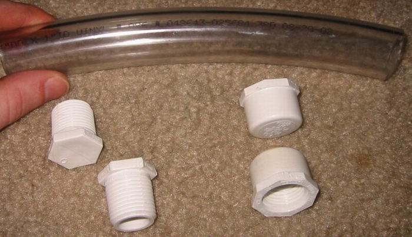
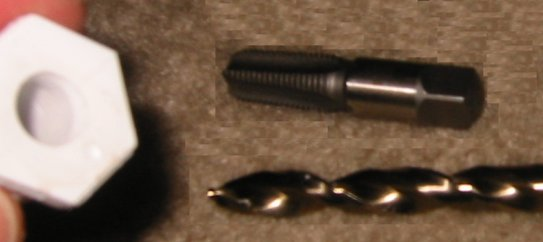
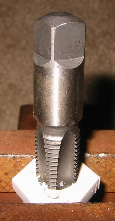
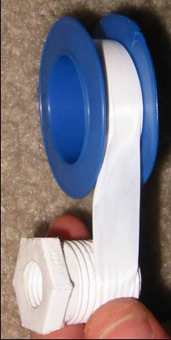
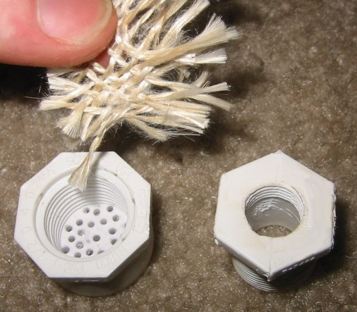
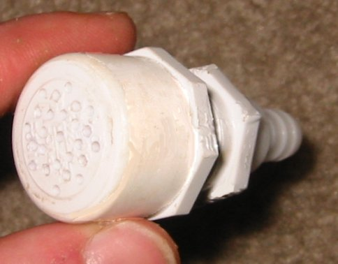
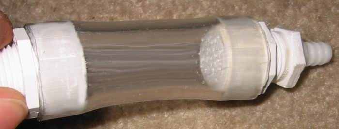
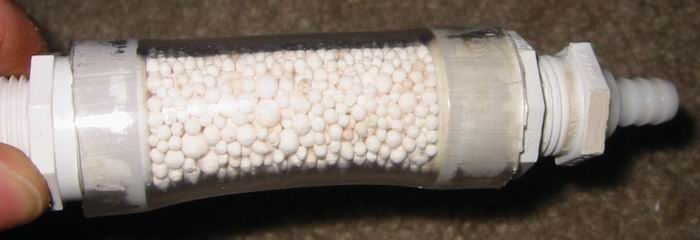

Inline Gas Dryer: cheap, easy, and OTCby MaDMAxDon't you hate setting up some kind of flask with drying agent every time you are generating gas (NH3, HCl, etc.) that needs to be dried? Or are you too cheap to buy a drying tube for this purpose? Or just too clumsy, and always break those damn glass things? Me too! So I went to the local hardware store and bought some cheap supplies. I purchased:
(Actually, I already had most of the items laying around the house.) Assembly:Items 1-3 are shown in the first picture below. (pic 1) The first step was to drill a 7/16" diameter hole in the center of each of the solid, threaded plugs. Then I used the 1/4" NPT tap to cut threads in each hole. Then a couple of wraps of teflon tape was placed around the outer threads of each plug (See pics 2-4). Next, the 1/16" drill bit was used to drill many small holes in each of the threaded end caps (seen in pic 5). Then a piece of fiberglass fabric salvaged from a dead heating mantle was placed inside of each end cap, Then a section of vinyl tubing was cut to approximately 4 inches in length. Each plug/unit fits very tightly into the ends of the section of vinyl tubing (with a little trimming and sanding of rough edges). (pic 7) To complete the assembly of the drying unit, an end plug is removed, the tubing filled with the drying agent of choice, then the plug replaced. Pic 8 shows a completed unit using CaCl2 pellets as the drying agent. The end cap with the many small holes will retain almost all drying agent material, and if any slips through, it will be caught by the fiber-glass fabric. And that's it! With a hose barb on each end, it is easily inserted inline of nearly any gassing apparatus, and the fit is tight enough, that no additional security features are necessary for most applications (however, it wouldn't hurt to wrap a few wraps of electrical tape around each end to ensure a leak-tight fit in critical applications). It is cheap enough to make one for each gas-drying application in your lab, and they won't break if you drop them on the concrete. Here's the pics (1-8):Pic 1. Pic 2.  Pic 3.  Pic 4.  Pic 5.  Pic 6.  Pic 7.  Pic 8.  |